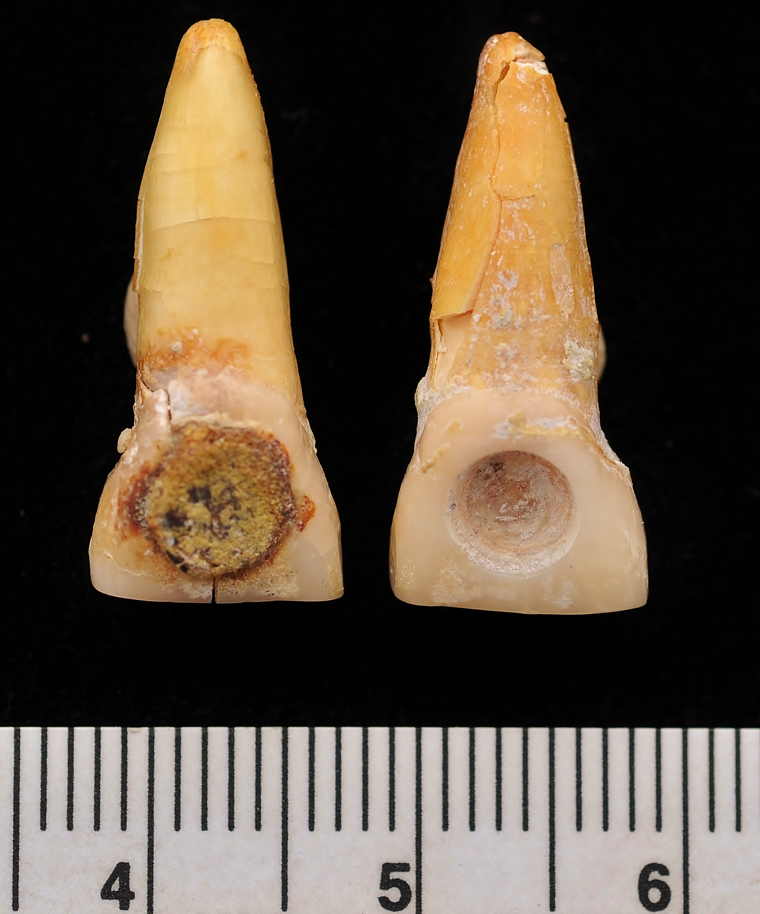

My name is Bill Brown and I h and directed excavations all over the US, Europe, and Belize. Currently I am the Senior Bioarchaeologist for the Maya Research Program, working on Classic Maya elite residences in northwestern Belize.

Becauerver and manage large amounts of geospatial data online so several people can access it. As an excavating archaeologist I need to maintain large volumes of geospatial data in order to interpret the artifactual materials we recover.